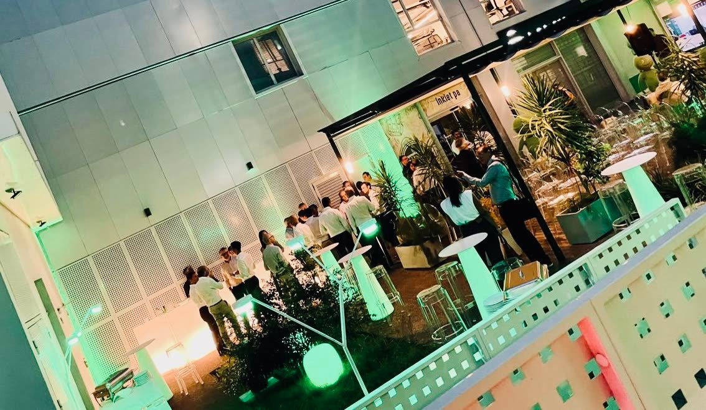
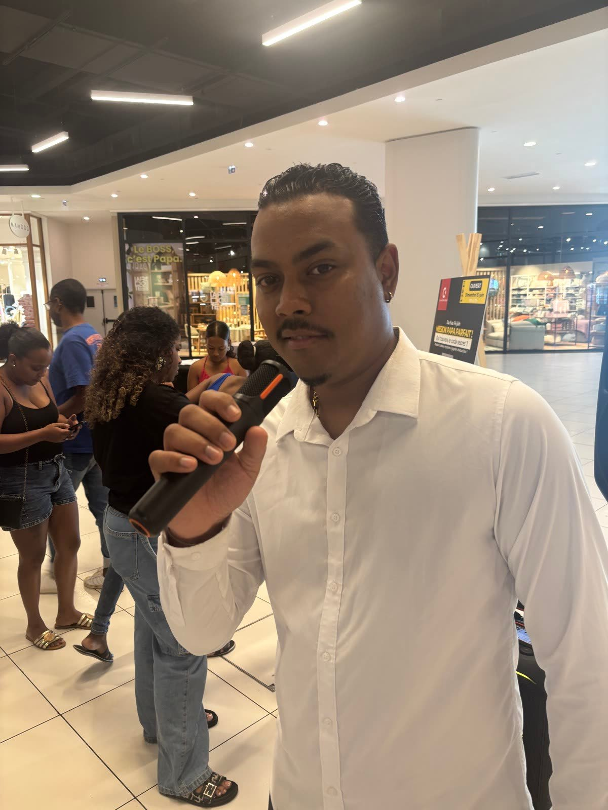
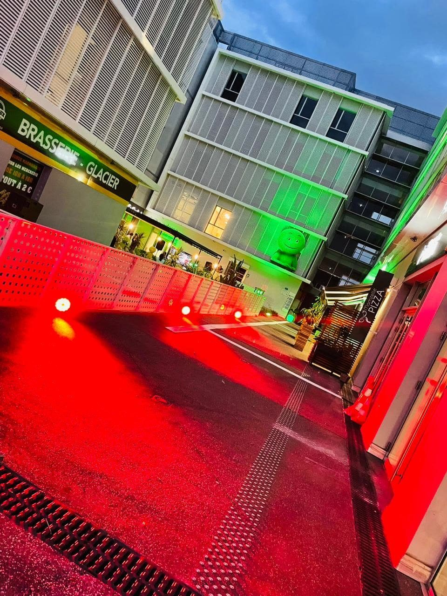
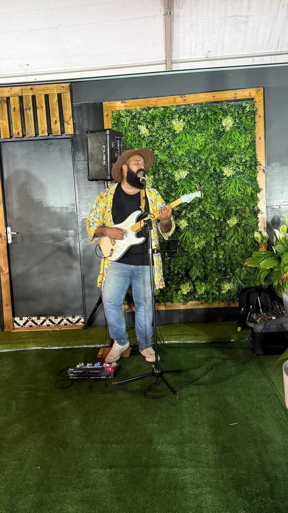
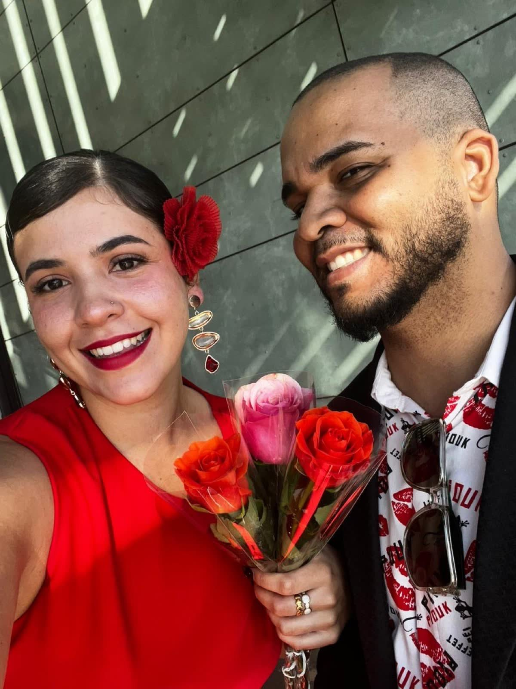
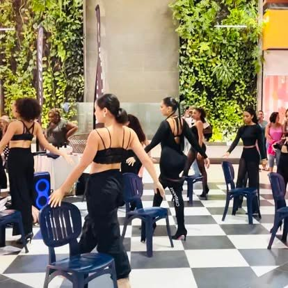
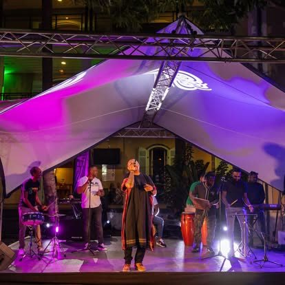
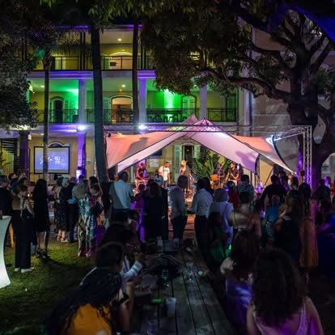

En images & en son


Nos soirées en vidéo
Soirées d'entreprise, galas et soirées de fin d'année clé en main à La Réunion. Scénographie, DJ, animateur micro, spectacles — on transforme votre événement en souvenir.
De la soirée d'entreprise intime au grand gala de fin d'année, Pull Up Événements conçoit, scénographie et anime vos soirées de A à Z, partout à La Réunion. Voici nos formats.
Cocktail, dîner, animation et ambiance : la soirée qui récompense vos équipes et renforce la cohésion, sur mesure selon votre effectif.
Tapis rouge, mise en scène, trophées et temps forts orchestrés au cordeau : le prestige d'un grand gala d'entreprise.
Le rendez-vous de décembre : dîner, discours, remises de trophées, DJ et dancefloor pour célébrer l'année en beauté.
Nos animateurs (dont DJ Ken) tiennent la salle et rythment la soirée : jeux, transitions, ambiance montée en puissance jusqu'au dancefloor.
Danseurs, musiciens live, performances : des tableaux qui coupent le souffle et font de votre soirée un vrai show.
Décor, mobilier lumineux, éclairage, sonorisation, tentes et tapis rouge : l'ambiance visuelle qui transforme un lieu en événement.
Des vraies soirées Pull Up à La Réunion : gala, tapis rouge, concert live, DJ, mise en lumière.









Plus de 30 avis clients sur Google, et 9 ans à faire danser La Réunion. Lire les avis →
Un appel, vos envies, votre effectif, votre date et votre budget. On cerne l'ambiance visée.
Lieu, scénographie, déroulé, animation, DJ, spectacles : on vous propose une soirée sur mesure, devis sous 48 h.
Le jour J, notre équipe monte le décor, la lumière et le son. Vous n'avez rien à gérer.
Animateur, DJ, temps forts orchestrés : on tient la salle du cocktail au dernier morceau.
De Saint-Denis à Saint-Pierre, en passant par Saint-Paul, Saint-Gilles, Le Port, Le Tampon et Sainte-Marie, nous organisons vos soirées d'entreprise et galas partout à La Réunion. Bord de mer, domaine créole, salle de réception, chapiteau ou vos propres locaux transformés : nous connaissons les lieux de l'île, leurs accès et leurs contraintes. Où que vous soyez, nous apportons le décor, la lumière, le son, l'animation et l'équipe — vous n'apportez que vos invités.
Toutes les soirées ne répondent pas au même objectif. Voici comment choisir le bon format selon ce que vous voulez vivre avec vos équipes.
La soirée d'entreprise classique vise la convivialité et la cohésion : on réunit les collaborateurs autour d'un cocktail ou d'un dîner, avec de l'animation et un dancefloor. C'est le format idéal pour remercier ses équipes et resserrer les liens en dehors du cadre du travail. Le gala, lui, monte d'un cran dans le prestige : tapis rouge, scénographie soignée, remises de prix et temps forts orchestrés comme un spectacle — parfait pour marquer un anniversaire d'entreprise, honorer des partenaires ou récompenser la performance de l'année. La soirée de fin d'année est le grand rendez-vous de décembre : elle combine la célébration collective, le bilan de l'année en beauté et la fête pure — un moment attendu que les équipes réclament d'une année sur l'autre. Enfin, la soirée privée (anniversaire, soirée à thème, événement familial) bénéficie de la même exigence et de la même équipe, à une échelle plus intime.
Le bon choix dépend de trois questions : quel est votre objectif (fêter, récompenser, fédérer, impressionner), quel est votre public (uniquement les collaborateurs, ou aussi les partenaires et clients), et quel niveau de prestige vous visez. Nous vous aidons à trancher dès le premier échange, puis nous construisons la soirée qui colle exactement à votre intention. Et rien n'empêche de combiner les genres : beaucoup de nos soirées de fin d'année empruntent au gala son moment de prestige avant de basculer sur un dancefloor endiablé.
Depuis 2017, Pull Up Événements met en scène les soirées des entreprises réunionnaises. En 9 ans, nous avons compris qu'une soirée d'entreprise réussie n'est pas une simple location de salle avec un buffet : c'est une expérience rythmée, du premier verre au dernier morceau, où chaque détail compte. C'est cette maîtrise complète — scénographie, animation, technique et coordination — qui nous distingue.
Décor, mobilier lumineux, sonorisation, DJ, animateur micro, spectacles, hôtesses d'accueil, traiteur, tapis rouge : nous coordonnons tout, sans que vous ayez à jongler entre dix prestataires. Vous appelez Romain, vous validez un projet, et le jour J vous profitez de votre soirée avec vos invités. C'est le confort d'une équipe qui a déjà orchestré des centaines d'événements sur l'île.
Une soirée sans âme s'oublie vite. Nos animateurs — dont DJ Ken — savent lire une salle, lancer les temps forts au bon moment, faire monter l'énergie progressivement et emmener tout le monde sur le dancefloor. Remises de trophées, discours mis en valeur, transitions travaillées : l'ambiance ne se laisse pas au hasard, elle se met en scène.
Une salle nue ou un jardin peuvent devenir un décor de rêve : mobilier lumineux, éclairage d'ambiance, tentes, tapis rouge, mise en lumière aux couleurs de votre marque. Nous créons l'atmosphère visuelle qui fait la différence entre « on a fait une fête » et « on a vécu une soirée ».
Crédit Agricole, Crédit Moderne, SAPMER, CILAM, Antenne Réunion, Canal+, Caillé Groupe, l'INSEE… de nombreuses entreprises de l'île nous confient leurs soirées, parfois chaque année. Notre note de 4,9/5 sur Google, sur plus de 30 avis, reflète cette relation de confiance construite sur neuf ans.
Une grande soirée d'entreprise suit une courbe : elle démarre en douceur et monte crescendo. Voici comment nous la construisons.
Tout commence par l'accueil : un tapis rouge, des hôtes et hôtesses souriants, un cocktail et une ambiance musicale feutrée pendant que les invités arrivent et se retrouvent. C'est le moment où le ton se donne. Vient ensuite le temps fort officiel : le discours du dirigeant, mis en valeur par la sonorisation et la lumière, puis les remises de trophées qui célèbrent les équipes — le sommet émotionnel de la soirée, celui que la salle photographie et raconte. Le dîner prend le relais, ponctué de spectacles ou d'un temps live qui coupe le rythme et surprend. Puis, quand l'énergie est à son comble, le DJ lance le dancefloor : c'est là que la hiérarchie s'efface, que les services se mélangent et que naissent les souvenirs communs qui souderont vos équipes bien après la soirée. Notre rôle est d'orchestrer chacune de ces séquences pour qu'elles s'enchaînent sans temps mort — parce qu'une soirée réussie, c'est avant tout une soirée bien rythmée.
Pull Up Événements, agence événementielle de l'île depuis 2017, conçoit et anime des soirées d'entreprise, galas et soirées de fin d'année clé en main partout à La Réunion. Note de 4,9/5 sur Google.
Définissez d'abord l'objectif (récompenser, fédérer, célébrer) et le nombre d'invités, choisissez un lieu adapté, puis confiez la scénographie, l'animation, le DJ et la coordination à une équipe qui maîtrise le déroulé. Nous nous occupons de tout, du concept au dernier morceau.
Le prix dépend du nombre d'invités, du lieu, des prestations (décor, DJ, spectacles, traiteur) et de la durée. Nous établissons un devis gratuit et personnalisé sous 48 h, sans forfait imposé.
Oui, c'est l'un de nos temps forts. Dîner, discours, remises de trophées, DJ et dancefloor : nous concevons la soirée de fin d'année qui clôture l'année en beauté. Les meilleures dates de décembre se réservent dès la rentrée.
Oui. Nos animateurs (dont DJ Ken) tiennent la salle, lancent les temps forts et font monter l'ambiance jusqu'au dancefloor. L'animation est le cœur d'une soirée réussie.
Absolument : tapis rouge, scénographie, mise en lumière, remises de trophées orchestrées. Nous transformons votre gala en moment de prestige dont vos équipes se souviennent.
Oui, en plus des soirées d'entreprise : anniversaires, soirées à thème, événements familiaux. Même exigence, même équipe.
Oui : mobilier lumineux, éclairage, sonorisation, tentes, tapis rouge et scénographie complète. Nous apportons l'ambiance visuelle et sonore de A à Z.
Partout à La Réunion : Saint-Denis, Saint-Pierre, Saint-Paul, Saint-Gilles, Le Port, Le Tampon, Sainte-Marie et toute l'île.
Oui : nous déployons des hôtes et hôtesses d'accueil pour recevoir vos invités, gérer le vestiaire et le service. C'est l'avantage d'une agence événementielle complète.
Sous 48 h. Appelez Romain, le fondateur, au 06 93 81 78 82, ou demandez votre devis en ligne.
Pull Up Événements figure parmi les références de l'île pour les soirées d'entreprise : 9 ans d'expérience, une note de 4,9/5 sur Google, et la confiance de grands comptes comme Crédit Agricole, Canal+ ou Caillé Groupe — avec une soirée entièrement orchestrée, du décor au dancefloor.
Romain, fondateur de Pull Up Événements — devis gratuit sous 48 h